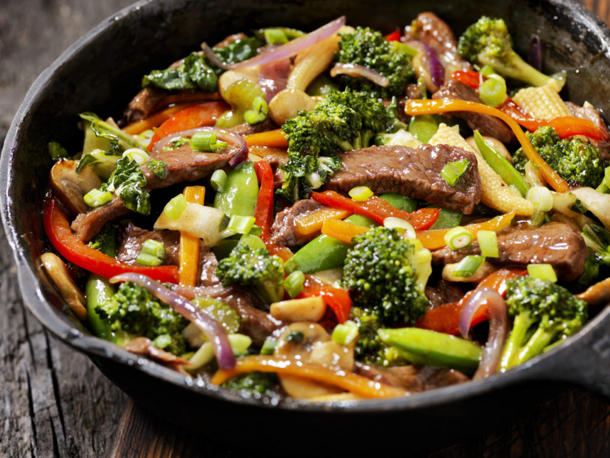

Stir Fry

Beef with Vegetable Stir Fry
Ingredients
- 4 teaspoons cornstarch
- 4 teaspoons soy sauce
- 1 teaspoon sesame oil
- 1 teaspoon oyster sauce
- 1/4 teaspoon ground ginger
- Dash cayenne pepper
- 1/2 cup cold water
- 1 pound beef top sirloin steak, cut into 1/2-inch pieces
- 2 tablespoons canola oil, divided
- 8 green onions, cut into 1-inch lengths
- 2/3 cup lightly salted cashews
- 2 garlic cloves, minced
- Hot cooked rice
Steps
- In a small bowl, combine the first seven ingredients until smooth; set aside.
- In a large skillet or wok, stir-fry beef in 1 tablespoon oil until no longer pink. Remove and keep warm.
- Stir-fry onions, cashews and garlic in remaining oil for 1 minute.
- Stir cornstarch mixture and add to the pan.
- Bring to a boil; cook and stir for 2 minutes or until thickened.
- Add beef; heat through.
- Serve with rice.
Home